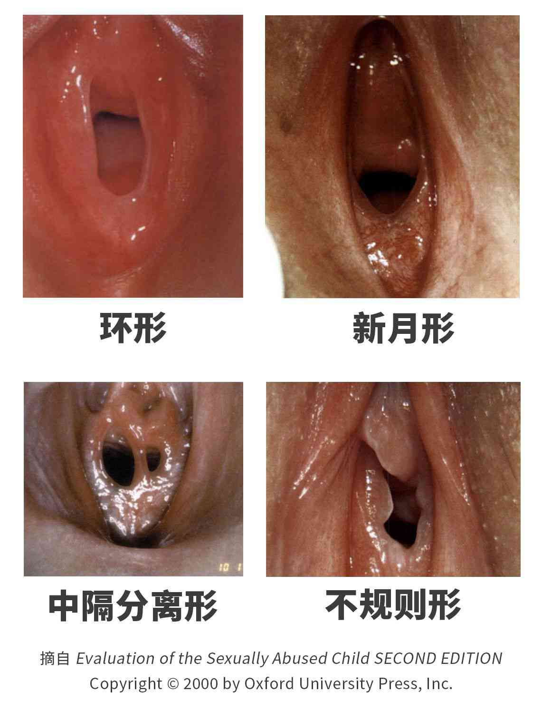

生殖系统是生物体内的和生殖密切相关的器官（生殖器）成分的总称。[1]
女性生殖系统

图 1 张开的女性阴部（外生殖器），图中没有描述阴毛

图 2 女性生殖系统
生殖器简述
如图 1 展示为用手张开的女性阴部，为女性生殖系统的重要组成部分。
女性的生殖系统分为外生殖器（即上图所示的外阴）和内生殖器。[5][13]
外部可见的外生殖器包括[5]
- 阴唇：分为大阴唇和小阴唇，阴唇的主要作用是保护阴蒂以及尿道口与阴道口；
- 阴蒂：位于小阴唇汇合处、尿道口上方的突起，可提供性快感（详见性行为章节）；
- 阴道口：阴道开口的缝隙，有处女膜围绕或部分覆盖（若未消失）。
处于体内的内生殖器包括[5]
- 卵巢：产生卵子和女性激素；
- 输卵管：卵子排出的通道；
- 子宫：可供胎儿在出生前生长发育之处；
- 子宫颈（又称宫颈）：子宫的末端；
- 阴道：产道，胎儿出生经过的通道。
卵巢可产生生殖细胞卵子，可与男性的精子结合成受精卵产生后代。
受到外界刺激时，阴蒂有可能会勃起变得大而坚硬，阴唇肿胀，阴道变得湿润。
阴蒂会在夜间或晨间刚睡醒时自发勃起，是正常现象。

图 3 女性的性兴奋
阴唇的外观是多样的[11]，不同的人在颜色、大小等方面存在着差异。

图 4 不同外形的女阴，其中一部分去除过阴毛
处女膜[9][10]
处女膜是一层位于阴道口的环状黏膜组织，包围或部分覆盖阴道口，在中央有一直径为 1～1.5 厘米的小孔。[8]
囿于“处女”二字，处女膜不完整被广泛误认为是发生过初次阴道性行为的依据。事实上，包括创伤、自慰、医学检查、运动、发生性行为等都有可能导致处女膜的破裂[11]，导致暂时性的出血和疼痛。[8]
许多人认为处女膜是一层覆盖于阴道口的完整膜，这一观点是错误的，只有少数女性的处女膜上没有空隙[11]，病理学称之为“闭锁”[8][10]，而且这种情况通常需要手术治疗[2]。
图 5 处女膜的其中四种形态
卵子
图 6 卵巢示意图（单侧）
人类的卵子是女性的生殖细胞，由卵巢所产生。
卵子的生成从女性出生前就已经开始。在女性胎儿出生时，卵巢中大约含有200万个卵泡（含有卵子原型——卵母细胞的细胞聚合体）。而到青春期，能存活约 30 万 ~ 40 万个。在从青春期到绝经期的 30 多年中，大约 400 ~ 500 个卵泡能够发育成熟排出。[2]
若与男性的生殖细胞精子结合形成受精卵，则会经过一系列过程，最终在子宫内膜着床，继续成长发育。
月经
月经，亦有人称“生理期”“大姨妈”“例假”，是指女性血液或黏膜定期从子宫内膜经阴道排出体外的现象。
月经是女孩生理发育过程中正常而又自然的一部分。
卵子由卵巢排出。若形成受精卵，则将发育为人类胚胎。为应对可能到来的胚胎，子宫内膜会增厚。在排卵后的两周内，如果没有胚胎植入子宫内膜，子宫内膜会受到激素影响分解出血。这便是月经出血的原因。而当女性怀孕后，身体内的激素将维持子宫内膜，月经便暂时停止。
未受精的卵子会被身体吸收。
月经周期中的排卵是生殖所需的关键身体机能。

图 7 月经周期
月经通常在 12 ~ 15 岁之间首次出现，大约于 45 ~ 55 岁时结束（这段时间又称为更年期、绝经期）。月经来临时，经血会持续流出约 2-7 天。
对所有女性来说，在月经期间能够获得经期用品（如卫生巾、卫生棉条等）、干净的水源及独立卫生间是非常重要的。[24]
高达 80% 女性曾表示在月经开始前出现部分症状——常见症状包含长出粉刺、乳房变得柔软、感到疲惫、容易发怒与情绪改变。由于这些症状会干扰正常生活，因此称为经前综合症。20 ~ 30% 女性会得到此症，其中的 3 ~ 8% 较为严重。[14]
经痛（亦称痛经、生理痛等）是女性月经来潮时产生的疼痛。主要可分为两种：原发性经痛及续发性经痛。在疼痛时，服用一些药物（如布洛芬）通常可以带来缓解。
原发性经痛发生在于女性开始出现规则性月经时，其经痛大都是发生在月经的前1~2天，经痛的表现为痉挛、绞痛。多数的经痛在月经的第二至三天会自动缓解，而且大部分的女性也会在年龄稍长或是生过孩子后会自然的减轻经痛或是消失经痛。疼痛通常发生在月经开始之前的几个小时或月经开始以后，而且会持续1至3天，耻骨上会有痉挛性的疼痛，有时会伴随着腰酸，疼痛也可能牵连到大腿，恶心、呕吐、腹泻的情况也很常见，严重者甚至可能晕倒，按压肚子、按摩腹部或改变姿势会减少经痛的症状。[14]
继发性经痛出现在女性有一段时间没有经痛的月经之后，或是本来月经来潮的不舒服症状渐渐的转变成为明显的腹痛。其表现的疼痛比较多样性，有时表现在痉挛、绞痛，有时表现在钝痛、胀痛甚至出现剧烈的刺痛。痛的性质大部分时间会随时年纪而减轻，但有时反而会恶化。疼痛通常在月经来潮前的1~2周就开始，而且会持续到出血停止之后几天才慢慢缓解，病因相当的多，子宫内膜异位是最常见的原因，其次是子宫的腺肌症或是子宫内避孕器造成的疼痛等等。[14]
白带
白带是一种粘糊状、淡白色或微黄、无特别气味的物质，由阴道壁渗出液、子宫有关的腺体和粘膜表皮上层脱落的细胞混合形成。
由于青春期激素增多，白带增多是正常现象。
当白带的气味、颜色和质量突发改变，应及时就医。[2]
女性生理用品及用法
为吸收月经的经血，不让经血留于衣物等处，通常会使用卫生巾、卫生棉条等生理用品。
除了少部分特殊用途较厚的卫生巾之外，大部分的卫生巾都有封膜，使用前要先将封膜撕开，把卫生巾取出。然后将背胶上和侧翼的贴条撕下，平放在内裤的适当位置，接着将侧翼反折到内裤的另一面贴上即可。
卫生棉条一般附有说明书。卫生棉条放置形式各异，使用应按照说明书步骤进行。
男性生殖系统

图 8 亚洲男性外生殖器（疲软状态，包皮覆盖）

图 9 阴茎（系带面，包皮翻开）
生殖器简述
如图为男性阴茎。阴茎是男性排尿和交配的器官。
男性生殖系统可以分为外生殖系统以及内生殖系统。
外生殖系统包括
- 阴茎：男性排尿和交配的器官；
- 阴囊：一层薄皮肤，包围并保护睾丸。
内生殖系统包括
- 睾丸：用于产生精子和分泌雄激素，精子可与女性的卵子结合形成受精卵；
- 附睾：精子在此成熟；
- 输精管：输送精子的通道；
- 精囊：产生精液的主要成分；
- 前列腺：产生精液的主要成分前列腺液；
- 尿道球腺：产生可润滑龟头及尿道的尿道球腺液。

图 10 男性生殖系统
阴茎在受到刺激时会勃起。阴茎勃起过程中会充血，可迅速地增大、变硬。完全勃起的情况下，阴茎体部会呈坚硬状态。
男性在受到性刺激时会由尿道口分泌透明无色而略粘稠的预射精液[23]（又作尿道球腺液，常被误认为是前列腺液）。
研究结果一定共识认为成年人类阴茎的平均勃起长度约为 12.9-15 厘米，95％ 的成年男性的阴茎勃起长度介于 10.2~19.7 厘米之间。[19]
阴茎会在夜间或晨间刚睡醒时自发勃起，是正常现象。
睾丸主要作用是产生精子和分泌雄性激素（主要是睾酮）。

图 11 男性的性兴奋
阴茎的外观是多样的，不同的人在颜色、大小等方面存在着差异，在勃起时的外观也不尽相同。有些阴茎在勃起时会观察到一定弧度的弯曲。

图 12 不同外形的、勃起状态的阴茎，其中一部分去除过阴毛
包皮
阴茎上覆盖有包皮作为皮肤。[19]幼儿的包皮较长，包着整个龟头，包皮口也小。随着年龄的增长，包皮逐渐退缩，包皮口也逐渐扩大。[4][19]青春期后包皮平时可能覆盖部分或全部龟头，阴茎勃起后可以自动或者用手轻易退到冠状沟后面 （如图 8 所示）。[19]
在包皮和龟头间常会存在包皮垢，它们由腺体分泌物、皮肤屑和残留尿液等组成，应定期清洗龟头以去除包皮垢。[2]
若是包皮不能退缩使龟头完全暴露，称之为包皮过长。[4]中国约有 50% 包皮过长的男性。若无感染，保持清洁即可。[2]
成年后，若包皮口过小，包皮全部或大部分包着龟头无法上翻、复原，此症状称为包茎。中国约有 15% 包茎的男性。在青春期，一部分人的包茎不会消失，鉴于包茎存在可能引起阴茎癌、发炎等的危害，应到医院就诊。[2]
精子和精液
人类精子是男性的生殖细胞，由睾丸所产生。
精子从青春期起持续不断地产生，一个成熟健康的男子每天会生成 7000 万 ~ 1.5 亿个精子。睾丸生成成熟的精子需约 64 ~ 72 天。[2]
精液一般是含有精子的流质，外观为半透明白色粘稠状，有类似石楠花的气味，在射出后会凝固呈胶冻状，一段时间后会液化。[3]
在受到性刺激一段时间后，包含有精子的精液会经勃起的阴茎的尿道口射出，此过程称为射精。射精是生殖所需的关键身体机能。

图 13 精液（未液化）
遗精
男性的遗精（又称梦遗）是指在睡眠过程中自发地性高潮，由此引发的射精现象。
自慰的频率可能与梦遗的频率有一定相关性，一般来说梦遗的频率较高的男性可能自慰的频率会较低。 [25]
本节正文内容已结束。
⭐ 你的 支持 可以鼓励知性的维护与运营。
参考资料
- ^维基百科编者. 生殖系统[G/OL]. 维基百科, 2022(20220303)[2022-03-03]. https://zh.wikipedia.org/w/index.php?title=%E7%94%9F%E6%AE%96%E7%B3%BB%E7%BB%9F&oldid=70441041.
- ^姚锦仙,程红. 健康的性[M]. 北京:高等教育出版社,2015.3:35-36,39,53,56,63 - ISBN 978-7-04-041738-8
- ^万学红,卢雪峰. 诊断学[M]. 北京:人民卫生出版社,2018:333-4 - ISBN 978-7-117-26374-0
- ^柏树令,应大君. 系统解剖学[M]. 北京:人民卫生出版社,2013:162 - ISBN 978-7-117-17149-6
- ^The Manual's Editorial Staff. 小知识：女性生殖系统概述[G/OL]. 默沙东诊疗手册大众版, c2022[2022-06-14]. https://www.msdmanuals.cn/home/quick-facts-women-s-health-issues/biology-of-the-female-reproductive-system/overview-of-the-female-reproductive-system.
- ^维基百科编者. 阴唇[G/OL]. 维基百科, 2022(20220308)[2022-03-08]. https://zh.wikipedia.org/w/index.php?title=%E9%98%B4%E5%94%87&oldid=70520801.
- ^维基百科编者. 陰道口[G/OL]. 维基百科, 2021(20211112)[2021-11-12]. https://zh.wikipedia.org/w/index.php?title=%E9%99%B0%E9%81%93%E5%8F%A3&oldid=68633909.
- ^维基百科编者. 处女膜[G/OL]. 维基百科, 2022(20220509)[2022-05-09]. https://zh.wikipedia.org/w/index.php?title=%E5%A4%84%E5%A5%B3%E8%86%9C&oldid=71551118.
- ^全国科学技术名词审定委员会. 处女膜[DB/OL]. 术语在线, [2022][2022-06-14]. https://www.termonline.cn/word/143691/1#s1.
- ^全国科学技术名词审定委员会. 处女膜闭锁[DB/OL]. 术语在线, [2022][2022-06-14]. https://www.termonline.cn/word/39901/1#s1.
- ^贺兰特·凯查杜里安.性学观止[M].北京:科学技术文献出版社,2019.3:36,38 - ISBN 978-7-5189-5126-0
- ^Wikipedia contributors. Vagina[G/OL]. Wikipedia, 2022(20220601)[2022-06-01]. https://en.wikipedia.org/wiki/Vagina.
- ^维基百科编者. 女性生殖系統[G/OL]. 维基百科, 2021(20210918)[2021-09-18]. https://zh.wikipedia.org/w/index.php?title=%E5%A5%B3%E6%80%A7%E7%94%9F%E6%AE%96%E7%B3%BB%E7%B5%B1&oldid=67760904.
- ^维基百科编者. 月經[G/OL]. 维基百科, 2021(20211226)[2021-12-26]. https://zh.wikipedia.org/w/index.php?title=%E6%9C%88%E7%B6%93&oldid=69284617.
- ^维基百科编者. 女陰[G/OL]. 维基百科, 2022(20220319)[2022-03-19]. https://zh.wikipedia.org/w/index.php?title=%E5%A5%B3%E9%99%B0&oldid=70696629.
- ^维基百科编者. 衛生棉[G/OL]. 维基百科, 2021(20211215)[2021-12-15]. https://zh.wikipedia.org/w/index.php?title=%E8%A1%9B%E7%94%9F%E6%A3%89&oldid=69100959.
- ^维基百科编者. 男性生殖系統[G/OL]. 维基百科, 2022(20220606)[2022-06-06]. https://zh.wikipedia.org/w/index.php?title=%E7%94%B7%E6%80%A7%E7%94%9F%E6%AE%96%E7%B3%BB%E7%B5%B1&oldid=72017756.
- ^维基百科编者. 睾丸[G/OL]. 维基百科, 2022(20220420)[2022-04-20]. https://zh.wikipedia.org/w/index.php?title=%E7%9D%BE%E4%B8%B8&oldid=71236051.
- ^维基百科编者. 人類陰莖[G/OL]. 维基百科, 2022(20220506)[2022-05-06]. https://zh.wikipedia.org/w/index.php?title=%E4%BA%BA%E9%A1%9E%E9%99%B0%E8%8E%96&oldid=71499989.
- ^维基百科编者. 精液[G/OL]. 维基百科, 2022(20220531)[2022-05-31]. https://zh.wikipedia.org/w/index.php?title=%E7%B2%BE%E6%B6%B2&oldid=71941075.
- ^维基百科编者. 夜間陰莖勃起[G/OL]. 维基百科, 2022(20220408)[2022-04-08]. https://zh.wikipedia.org/w/index.php?title=%E5%A4%9C%E9%96%93%E9%99%B0%E8%8E%96%E5%8B%83%E8%B5%B7&oldid=71045971.
- ^维基百科编者. 夜間陰蒂勃起[G/OL]. 维基百科, 2021(20210831)[2021-08-31]. https://zh.wikipedia.org/w/index.php?title=%E5%A4%9C%E9%96%93%E9%99%B0%E8%92%82%E5%8B%83%E8%B5%B7&oldid=67443291.
- ^维基百科编者. 预射精液[G/OL]. 维基百科, 2022(20220606)[2022-06-06]. https://zh.wikipedia.org/w/index.php?title=%E9%A2%84%E5%B0%84%E7%B2%BE%E6%B6%B2&oldid=72017763.
- ^联合国教育、科学及文化组织, 联合国艾滋病规划署秘书处,联合国人口基金等. 国际性教育技术指导纲要[M/OL].2018 - ISBN 978-92-3-500020-7. https://unesdoc.unesco.org/ark:/48223/pf0000260770_chi.
- ^Alfred Charles Kinsey, Wardell Baxter Pomeroy, Clyde Eugene Martin.Sexual Behavior in the Human Male[M].1948(Original):511 - ISBN 978-0-253-33412-8. https://books.google.com.hk/books?id=pfMKrY3VvigC&pg=PA511.
版权
正文内容
详见版权许可。
图片来源
本页图片除图 4 外，均来自互联网，且均在版权合规要求下使用。关于图 4 的版权，请见下方“有关图 4 的版权说明”。
| 图片编号 | 作者 | 来源 |
|---|---|---|
| 封面 | TOMOKO UJI | Unsplash |
| 图 1 | GnolizX Sci-img |
Wikimedia Commons |
| 图 2 | Witcater BruceBlaus |
Wikimedia Commons |
| 图 3 |
Coupleabc Tom Marquez Hutanisa Ingrid w Alexkhandria2K Amateurlover Latin Temptation |
改自 Wikimedia Commons 改自 Wikimedia Commons |
| 图 4 | Fotomannforever | Wikimedia Commons |
| 图 5 | - | 改自 Evaluation of the Sexually Abused Child SECOND EDITION |
| 图 6 | Zealthy.in | 改自 Zealthy.in |
| 图 7 | Chris 73 KaurJmeb Dingar |
Wikimedia Commons |
| 图 8 | Ganlin88 | Wikimedia Commons |
| 图 9 | Cheywen | Wikimedia Commons |
| 图 10 | Tsaitgaist alt.sex FAQ |
Wikimedia Commons |
| 图 11 | Cmppp | 改自 Wikimedia Commons |
| 图 12 |
ShavedCock Wumingbai Cabbageinaletterbox Barebi等 |
改自 Wikimedia Commons |
| 图 13 | X.Ran Lin | 公有领域 |
{kind=link}
{kind=link}
{kind=link}
{kind=link}
{kind=link}
{kind=link}
.jpg){kind=link}
{kind=link}
{kind=link}
{kind=link}
{kind=link}
有关图 4 的版权说明
图 4 改自 Oxford University Press, Inc. 出版图书 Evaluation of the Sexually Abused Child SECOND EDITION 的插图。 我们尝试联系了牛津大学出版社（中国）有限公司， 但对方未回应。本着教学目的，兹按照 《中华人民共和国著作权法》第二十四条与《美国版权法》Chapter 1 § 107 之规定对该图片进行合理使用（Fair use）之引用。如有版权问题，请联系 knowsex@outlook.com 。
该图片所属图书版权归 Oxford University Press, Inc. 所有，版权声明如下。
Copyright © 2000 by Oxford University Press, Inc.
Copyright Notice for Figure 4
Figure 4 is an illustration edited from the book Evaluation of the Sexually Abused Child SECOND EDITION, published by Oxford University Press, Inc. We have tried to contact Oxford University Press (China), Inc. but have not received a response. For educational purposes, this image is cited for fair use in accordance with Article 24 of the Copyright Law of the People's Republic of China and Copyright Law of the United States (Title 17) Chapter 1 § 107. If you have any questions about copyright, please contact knowsex@outlook.com .
The copyright of the book owned by Oxford University Press, Inc. and the copyright notice is as follows.
Copyright © 2000 by Oxford University Press, Inc.